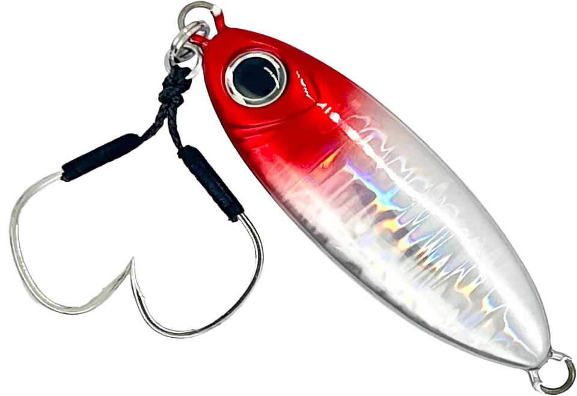
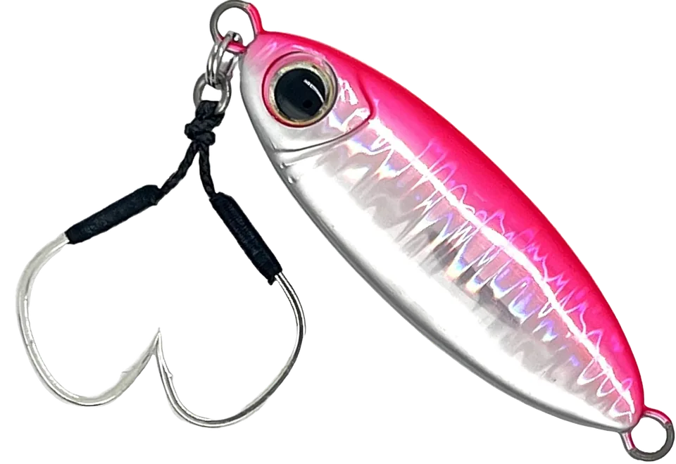
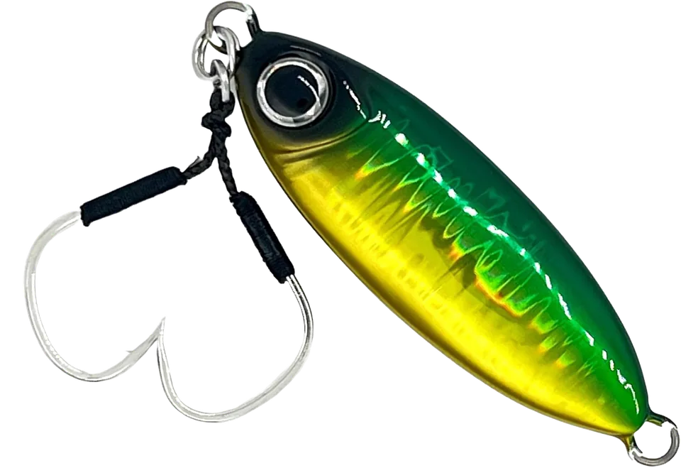

メタルジグ 伍号
（METAL JIG No.5）
メタルジグ 伍号（METAL JIG No.5）はALLGU FISHING（オールグーフィッシング）のメタルジグ（スロージグ）です。
オールグーフィッシングの「フォールでもジャークでも簡単にバイトポイントを演出できる新感覚スロージグ」です。キャッチコピーは「ロックフィッシュからハイプレッシャー青物まで」。20〜250gの全8ウエイトで、ショアの堤防五目やロックフィッシュから、SLJ・タイジギング・オフショアのスロージギングまで、1つで幅広く使えるのが最大の魅力です。

画像出典:オールグーフィッシング公式HP
スペック
- メーカー
- ALLGU FISHING（オールグーフィッシング）
- タイプ
- メタルジグ（スロージグ）
- ウエイト
- 20g／30g／40g／60g／80g／130g／200g／250g
- フック
- 20〜40gはWアシストフック標準装備
- 塗装
- 8層多層コート・全色ケイムラ＋ゼブラグロー
- カラー
- 全7色
- ターゲット
- ロックフィッシュ・青物・マダイ・イサキ・シーバスなど
- 価格
- 749円（20g）〜1,782円（250g）（税込）
▼今すぐチェック

メタルジグ 伍号の特徴
食わせの間を作りやすい、ショアからオフショアまで使える万能スロージグ
-
テンションフォールで作る“食わせの間”
テンションフォールでは、ゼブラグローが入った面を下にして細かなバイブレーションを出しながら、時折水平姿勢になって食わせの間を作る。ジャーク時もダートの合間に水平姿勢を作れる。
-
8層多層コート×全色ケイムラ
独自の8層多層コートで塗装が剥がれにくく、歯の鋭い魚にも対応。全色にケイムラ加工が施され、濁りや朝夕マズメ、曇天、深場でもしっかり存在をアピールする。
-
独自の「ターコイズグロー」
夜光部分には、青みがかったオールグー独自の「ターコイズグロー」を採用。発光するプランクトンに寄せた色で、プランクトンを食べたベイトのような自然な発光を再現している。
メタルジグ 伍号の使い方
ショアでは、キャストしてボトムを取ったら、ショートピッチのジャークで短いダートを連発させ、合間のフォールで食わせる。テンションフォール中に時折水平姿勢になるので、フォールでのバイトも多い。
オフショアのスロージギングでは、ゆっくりしたジャークとフォールで誘う。重さを使い分ければ、浅場のロックフィッシュから深場の青物・マダイまで対応できます。
メタルジグ 伍号の得意な状況
堤防からのライトショアジギングやロックフィッシュ、ボートからのSLJ・タイジギング・スロージギングなど、1つのジグで色々な魚を狙いたい状況が最大の出番。
プレッシャーが高く、速い動きに反応しない青物に、フォールの食わせで口を使わせたい場面でも選びたい1本です。
ワンポイント
ショアで扱いやすい20〜40gにはWアシストフックが付いているので、買ってすぐに使えます。60g以上はフックを別に用意しましょう。
全色にゼブラグローが入っているので、朝夕のマズメや深場ではグローを蓄光させてから投げると、アピール力を高められます。
ウエイトの使い分け
| ウエイト | 価格（税込） | 主な使いどころ |
|---|---|---|
| 20g・30g | 749円 | 堤防五目・ロックフィッシュ・ライトショアジギング |
| 40g | 880円 | ショアジギング・SLJ |
| 60g・80g | 979円・999円 | SLJ・ライトジギング・タイジギング |
| 130g | 1,496円 | ジギング・水深のある場所 |
| 200g・250g | 1,694円・1,782円 | オフショアのスロージギング・パワーゲーム |
※価格はルアーニュースRの紹介記事より。使いどころは目安です。
オススメカラー
メタルジグ 伍号は全7色展開で、全色にゼブラグローが入っています。オススメのカラーを紹介します。
 イワシゼブラグロー
イワシゼブラグロー
イワシを食べている魚に合わせる定番ベイトカラー。

レッドヘッドゼブラグロー赤いヘッドで目立たせるアピールカラー。濁りや朝夕に。

ピンクシルバーゼブラグローピンクとシルバーのフラッシングで広くアピール。

グリキンゼブラグローグリーン×ゴールドのグリキン。ロックフィッシュや濁りにも強い。
画像出典:オールグーフィッシング公式HP
メタルジグ 伍号に似ているルアー
-
 ジグパラショート
メジャークラフト
詳細はこちら＞
ジグパラショート
メジャークラフト
詳細はこちら＞
定番のショアジギングジグ。コンパクトなシルエットで飛距離を出したい時に。
-
 フォルテン
ブルーブルー
詳細はこちら＞
フォルテン
ブルーブルー
詳細はこちら＞
よく飛び素早く落ちるメタルジグ。速いフォールで探りたい時の持ち替え先に。
-
 シーライド
ブルーブルー
詳細はこちら＞
シーライド
ブルーブルー
詳細はこちら＞
順付け・逆付けで2通りに使えるメタルジグ。1つで色々な使い方をしたい時に。